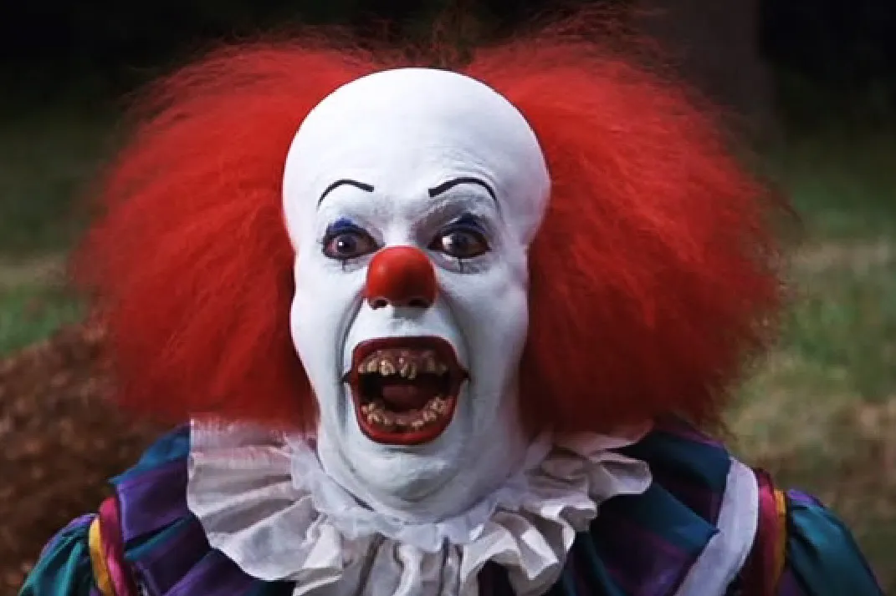

My Fears
Like everyone else, I have my fears and anxieties. Some of them are rational, while others are more irrational and difficult to explain. One of my biggest fears is failing in my academic and professional pursuits. I often worry about not meeting my own expectations or the expectations of others.
Mathematics
Throughout my academic career, one subject I have always been challenged by is mathematics. I was always decent at math until high school, when I started taking calculus-related courses.
I never liked calculus, but I found the real-world applications extremely interesting. In high school, I was expected to take calculus because I was part of the STEM program, which emphasized advanced mathematics and science courses. I took precalculus twice because I wanted to improve my understanding and performance in the subject. Also, I was one of the only few students in my class who didn't cheat on the tests. Our teacher would leave as soon as the tests began to play chess in the class across the hall. I took AP Calculus AB in high school, which is the equivalent of Calculus I at the college level. I scored a 2 on the AP test, which was not high enough to earn college credit. I ended up taking Business Math in college, but I would one day like to revisit calculus and strengthen my understanding of the subject.
This integral represents the area under the curve of the function 8x cubed + 3x squared + 6x from x = 2 to x = 3.Clowns
Growing up, my family and I would rent movies and order pizza for movie nights. My dad loved horror movies, and I hated them. One time I tried to watch an entire movie with him. He was watching It, and I was terrified of clowns after only making it half way through the movie. That fear has lingered into adulthood.

Falling
I have no issues whith heights, I can climb a ladder or stand on a high balcony without feeling dizzy or anxious. However, I do have a fear of falling, which can make certain activities challenging. I went to a ropes course once and found it extremely difficult to navigate the high elements due to my fear of falling. Despite being secured by safety harnesses and other saftey factors, the fear of falling still affected my performance and enjoyment of the activity.